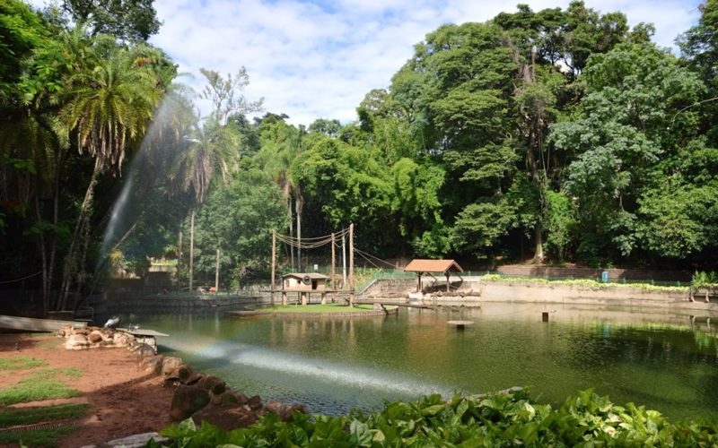

Campinas
A Capital do Interior Paulista
História
Fundada em 14 de julho de 1774, Campinas nasceu como um pequeno povoado agrícola no interior de São Paulo. Seu nome vem das “campinas” — campos abertos da região.
No século XIX, ganhou destaque como polo de produção de café, o que atraiu riqueza, imigração europeia (especialmente italiana) e acelerou seu desenvolvimento. No século XX, Campinas se consolidou como centro industrial, tecnológico e educacional, sendo hoje considerada a capital do interior paulista.
Pontos turísticos
Campinas oferece opções variadas entre história, cultura e lazer:
• Bosque dos Jequitibás –fundado em 1881, é um dos zoológicos mais antigos do Brasil e área verde no coração da cidade.
• Torre do Castelo – mirante com vista panorâmica da cidade.
• Catedral Metropolitana de Campinas – construída no século XIX, em estilo barroco-rococó.
• Observatório Municipal Jean Nicolini – um dos principais do país para observação astronômica.
• Lagoa do Taquaral (Parque Portugal) – cartão-postal da cidade, com pedalinhos, bondinho e pista de caminhada.
• Museu da Imagem e do Som (MIS) – espaço cultural com exposições e mostras.
• Estação Cultura – antiga estação ferroviária, hoje centro cultural e de eventos.
Curiosidades
• Campinas é chamada de “Princesa do Oeste”, devido à sua importância no interior paulista.
• Possui mais de 1,2 milhão de habitantes, sendo a maior cidade do interior de SP.
• É sede da UNICAMP, uma das universidades mais respeitadas da América Latina.
• Tem uma das economias mais fortes do Brasil, com destaque em tecnologia, indústria farmacêutica e agronegócio.
• Foi uma das primeiras cidades brasileiras a receber energia elétrica, ainda no século XIX.
Cultura e Gastronomia
A vida cultural de Campinas é intensa: o Teatro Castro Mendes, o Centro de Convivência Cultural e festivais como o Campinas Jazz Festival movimentam a cidade.
Na gastronomia, Campinas reflete a diversidade do interior paulista: de cantinas italianas tradicionais a restaurantes modernos e internacionais. Bares e casas noturnas também fazem parte da vida noturna agitada da cidade.
Voltar